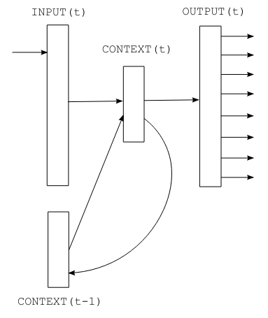

循环神经网络#
在本课程中，我们将学习如何使用**循环神经网络（RNN）**预测下一个字符。我们基于论文《基于循环神经网络的语言模型》中描述的架构，该论文为这一任务提出了简单的 RNN 版本。
RNN 的优势在于，它们不需要固定的上下文大小，而之前学习的全连接网络模型则需要。
RNN 能记住上下文信息，无论序列长度如何。这一理论上的优点非常吸引人，但我们将在课程最后看到它们也存在局限性。

图片来源于原论文
RNN 的工作原理#
RNN 以顺序方式工作：逐个处理字符。下一个字符的预测依赖于当前输入和保存的状态（state），该状态包含之前字符的信息。
数学上，RNN 包含三个核心组件：
输入 (input)：\(x\)
隐藏状态 (state)：\(s\)
输出 (output)：\(y\)
我们还引入时间步 \(t\) 来处理序列。
在时间 \(t\) 时，输入由以下公式给出： \(x(t) = w(t) + s(t-1)\) 其中，\(w(t)\) 是 one-hot 编码，\(s(t-1)\) 是前一时刻的状态。
随后，计算状态和输出： \(s(t) = sigmoid(x(t))\) \(y(t) = softmax(s(t))\)
唯一需要调整的参数是隐藏层的大小 \(s\)。
初始化时，\(s(0)\) 可以是一个小的随机向量。
实践操作#
import torch
import torch.nn as nn
数据集#
用 RNN 生成名字并不十分实用，因为名字较短且上下文有限。为了更有意义的任务，我们需要一个上下文更丰富的数据集。
因此，我们使用包含莫里哀对话的文本文件。该数据集基于 Gutenberg.org 上的完整作品，并经过清理，仅保留对话部分。
with open('moliere.txt', 'r', encoding='utf-8') as f:
text = f.read()
print("Nombre de caractères dans le dataset : ", len(text))
Nombre de caractères dans le dataset : 1687290
由于数据集较大，我们仅选取部分数据（例如前 50,000 个字符）以加快处理速度。
text=text[:50000]
print("Nombre de caractères dans le dataset : ", len(text))
Nombre de caractères dans le dataset : 50000
前 250 个字符如下：
print(text[:250])
VALÈRE.
Eh bien, Sabine, quel conseil me donnes-tu?
SABINE.
Vraiment, il y a bien des nouvelles. Mon oncle veut résolûment que ma
cousine épouse Villebrequin, et les affaires sont tellement avancées,
que je crois qu'ils eussent été mariés dès aujo
数据集中唯一字符的数量：
chars = sorted(list(set(text)))
vocab_size = len(chars)
print(''.join(chars))
print("Nombre de caractères différents : ", vocab_size)
!'(),-.:;?ABCDEFGHIJLMNOPQRSTUVYabcdefghijlmnopqrstuvxyzÇÈÉàâæçèéêîïôùû
Nombre de caractères différents : 73
我们创建字符与整数之间的映射（双向）
stoi = { ch:i for i,ch in enumerate(chars) }
itos = { i:ch for i,ch in enumerate(chars) }
encode = lambda s: [stoi[c] for c in s] # encode : prend un string et output une liste d'entiers
decode = lambda l: ''.join([itos[i] for i in l]) # decode: prend une liste d'entiers et output un string
我们将数据集编码：先将字符串转换为整数，再转换为 PyTorch 张量。
data = torch.tensor(encode(text), dtype=torch.long)
print(data[:250]) # Les 250 premiers caractères encodé
tensor([32, 12, 22, 59, 28, 16, 8, 0, 0, 16, 41, 1, 35, 42, 38, 46, 6, 1,
29, 34, 35, 42, 46, 38, 6, 1, 49, 53, 38, 44, 1, 36, 47, 46, 51, 38,
42, 44, 1, 45, 38, 1, 37, 47, 46, 46, 38, 51, 7, 52, 53, 11, 0, 0,
29, 12, 13, 20, 24, 16, 8, 0, 0, 32, 50, 34, 42, 45, 38, 46, 52, 6,
1, 42, 44, 1, 56, 1, 34, 1, 35, 42, 38, 46, 1, 37, 38, 51, 1, 46,
47, 53, 54, 38, 44, 44, 38, 51, 8, 1, 23, 47, 46, 1, 47, 46, 36, 44,
38, 1, 54, 38, 53, 52, 1, 50, 66, 51, 47, 44, 72, 45, 38, 46, 52, 1,
49, 53, 38, 1, 45, 34, 0, 36, 47, 53, 51, 42, 46, 38, 1, 66, 48, 47,
53, 51, 38, 1, 32, 42, 44, 44, 38, 35, 50, 38, 49, 53, 42, 46, 6, 1,
38, 52, 1, 44, 38, 51, 1, 34, 39, 39, 34, 42, 50, 38, 51, 1, 51, 47,
46, 52, 1, 52, 38, 44, 44, 38, 45, 38, 46, 52, 1, 34, 54, 34, 46, 36,
66, 38, 51, 6, 0, 49, 53, 38, 1, 43, 38, 1, 36, 50, 47, 42, 51, 1,
49, 53, 3, 42, 44, 51, 1, 38, 53, 51, 51, 38, 46, 52, 1, 66, 52, 66,
1, 45, 34, 50, 42, 66, 51, 1, 37, 65, 51, 1, 34, 53, 43, 47])
我们将数据集划分为训练集和测试集：
n = int(0.9*len(data)) # 90% pour le train et 10% pour le test
train_data = data[:n]
test = data[n:]
注意：每次迭代中，我们都会顺序遍历整个数据集。
模型构建#
现在开始构建模型！
根据论文，输入（字符）首先进行 one-hot 编码，然后与前一状态相加。因此，我们需要两个全连接层：
第一个层将输入 \(x(t)\) 转换为状态 \(s(t)\)
第二个层将状态 \(s(t)\) 转换为预测输出 \(y(t)\)

公式来源于论文，\(f\) 为 sigmoid 函数，\(g\) 为 softmax 函数
建议：该论文内容清晰简洁，值得一读。
class rnn(nn.Module):
def __init__(self,hidden_dim,vocab_size) -> None:
super(rnn, self).__init__()
self.hidden_to_hidden=nn.Linear(hidden_dim+vocab_size, hidden_dim)
self.hidden_to_output=nn.Linear(hidden_dim, vocab_size)
self.vocab_size=vocab_size
self.hidden_dim=hidden_dim
self.sigmoid=nn.Sigmoid()
# Le réseau prend en entrée le caractère actuel et le state précédent
def forward(self, x,state):
# On one-hot encode le caractère
x = torch.nn.functional.one_hot(x, self.vocab_size).float()
if state is None:
# Si on a pas de state (début de la séquence), on initialise le state avec des petites valeurs aléatoires
state = torch.randn(self.hidden_dim) * 0.1
x = torch.cat((x, state), dim=-1) # Concaténation de x et du state
state = self.sigmoid(self.hidden_to_hidden(x)) # Calcul du nouveau state
output = self.hidden_to_output(state) # Calcul de l'output
# On renvoie l'output et le state pour le prochain pas de temps
return output, state.detach() # detach() pour éviter de propager le gradient dans le state
模型训练#
训练参数如下：
epochs = 10
lr=0.1
hidden_dim=128
model=rnn(hidden_dim,vocab_size)
criterion = torch.nn.CrossEntropyLoss()
optimizer = torch.optim.SGD(model.parameters(), lr=lr)
现在开始训练模型！
for epoch in range(epochs):
state=None
running_loss = 0
n=0
for i in range(len(train_data)-1):
x = train_data[i]
y = train_data[i+1]
optimizer.zero_grad()
y_pred,state = model.forward(x,state)
loss = criterion(y_pred, y)
running_loss += loss.item()
n+=1
loss.backward()
optimizer.step()
print("Epoch: {0} \t Loss: {1:.8f}".format(epoch, running_loss/n))
Epoch: 0 Loss: 2.63949568
Epoch: 1 Loss: 2.16456994
Epoch: 2 Loss: 2.00850788
Epoch: 3 Loss: 1.91673251
Epoch: 4 Loss: 1.84440742
Epoch: 5 Loss: 1.78986003
Epoch: 6 Loss: 1.74923073
Epoch: 7 Loss: 1.71709289
Epoch: 8 Loss: 1.68791167
Epoch: 9 Loss: 1.66215199
现在在测试集上评估模型：
state=None
running_loss = 0
n=0
for i in range(len(train_data)-1):
with torch.no_grad():
x = train_data[i]
y = train_data[i+1]
y_pred,state = model.forward(x,state)
loss = criterion(y_pred, y)
running_loss += loss.item()
n+=1
print("Loss: {0:.8f}".format(running_loss/n))
Loss: 1.77312289
测试集上的损失略高于训练集，说明模型存在轻微过拟合。
文本生成#
模型训练完成后，我们可以生成莫里哀风格的文本！
import torch.nn.functional as F
moliere='.'
sequence_length=250
state=None
for i in range(sequence_length):
x = torch.tensor(encode(moliere[-1]), dtype=torch.long).squeeze()
y_pred,state = model.forward(x,state)
probs=F.softmax(torch.squeeze(y_pred), dim=0)
sample=torch.multinomial(probs, 1)
moliere+=itos[sample.item()]
print(moliere)
.
VARDILE.
Vout on est nt, jes l'un ouint; sabhil.
LE DOCTE.
Si vous dicefalassîntes
GIRGIB.
MARGRIILÉ.
LE DOCTE. Jort; et
; bieu,
et je mu tu d'ais d'ai coupce!
SGÉLLÉ.
Il Sgnous elli massit que
Suis pluagil dés.
Cais téscompas: y totte demes
生成结果并不完美，但可以识别出一些词语和类似 “moliere.txt” 的句子结构。对于单层 RNN 来说，效果不错！
如何改进结果？ 以下是一些建议：
RNN 的局限性#
RNN 长期以来是 NLP 和深度学习研究的核心，但它们在大型模型中存在多项局限性：
虽然理论上支持无限上下文，但顺序结构使得信息在长序列中难以有效传播。
长序列中的梯度消失问题严重。
顺序结构不利于并行化，而 GPU 更适合并行计算，导致训练速度较慢。
固定结构难以捕捉复杂关系。
自 Transformer 问世后，RNN 的使用逐渐减少。